일반기계기사 (2008-05-11 기출문제)
1과목: 재료역학
1. 탄성계수(E)가 200GPa인 강의 전단 탄성계수(G)는 약 몇 GPa인가? (단, 포아송비는 0.3이다.)
- 66.7
- 76.9
- 100
- 267
(정답률: 63%)

2. 외경이 내경이 2배인 원통 단면의 보에서 최대 전단응력과 평균 전단응력의 비
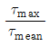
은?- 15/28
- 28/15
- 14/3
- 3/14
(정답률: 20%)
3. 유효지름 40mm, 길이 500mm의 하단은 고정되고 상단은 자유인 기둥이 있다. 유효 세장비(effective slenderness ratio)는 얼마인가?
- 60
- 80
- 90
- 100
(정답률: 44%)
4. 지름 d인 원형 단면봉이 비틀림 모멘트 T를 받을 때, 봉의 표면에 발생하는 최대 전단응력은 얼마인가? (단, G는 전단 탄성계수, θ는 봉의 단위 길이마다의 비틀림각이다.)
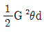
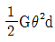
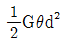
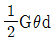
(정답률: 48%)
5. 그림과 같은 요소가 평면응력 상태로 σx=65MPa, σy=-28MPa, γxy=-34MPa의 응력을 받고 있다. x축으로부터 θ=10°만큼 회전한 요소에 작용하는 응력을 구한 것은?
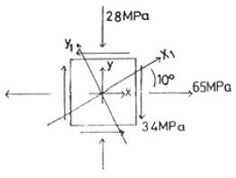
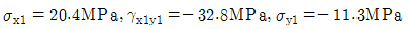
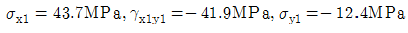
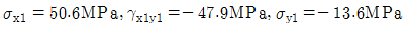
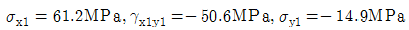
(정답률: 34%)
6. 그림과 같이 지름이 d1, d2, 길이가 L1, L2, 탄성계수가 E1, E2인 부재에 10kN, 30kN의 하중의 작용할 경우 총변형량은 약 몇 mm인가?
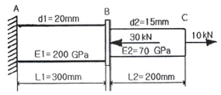
- -0.066
- 0.066
- 0.257
- -0.257
(정답률: 44%)
7. 그림과 같은 보에서 최대 굽힘 모멘트는 몇 kN·m인가?
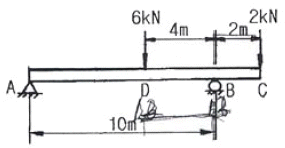
- 4
- 12
- 16
- 8
(정답률: 52%)
8. 단면적이 600mm2인 환봉에 다음과 같이 압축하중 P=90kN이 작용한다. 하중과 수직한 단면에서 25° 기울어진 a-b 단면에 작용하는 수직응력(σθ)과 전단응력(τθ)는?
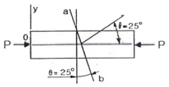
- σθ=-123.2MP, τθ=57.4MPa
- σθ=-57.4MPa, τθ=123.2MPa
- σθ=-61.6MPa, τθ=28.7MPa
- σθ=-28.7MPa, τθ=61.6MPa
(정답률: 38%)
9. 코일 스프링에 하중 P가 가해져서 δ 만큼 늘어났다면, 스프링에 저장된 탄성 에너지 U는 얼마인가?
- U=Pδ
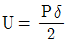
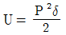
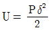
(정답률: 34%)
10. 지름 30mm의 원형 단면이며, 길이 1.5m인 봉에 85kM의 축방향 하중이 작용한다. 탄성계수 E = 70GPa, 포아송비 μ=1/3일 때, 체적 증가량의 근사값은 몇 ㎣인가?
- 30
- 60
- 300
- 600
(정답률: 35%)
11. 그림과 같은 스트레인 로제트(strain rosette)에서 Єa=100×10-5, Єb=200×10-6, Єc=900×10-6이다. 이 때 주변형률의 크기는?
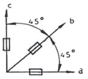
- Є1=-10-3, Є2=0
- Є1=0, Є2=-10×10-3
- Є1=10×10-3, Є2=0
- Є1=10-3, Є2=0
(정답률: 14%)
12. 내경이 16cm, 외경이 20cm인 중공축에 250N·m의 비틀림 모멘트가 작용할 때 발생되는 최대 전단변형률은? (단, 전단 탄성계수는 G=50GPa이다.)
- 5.4x10-6
- 6.7x10-6
- 7.2x10-8
- 8.7x10-8
(정답률: 60%)
13. 보에서 원형과 정사각형의 단면적이 같을 때, 단면계수의 비 Z1/Z2 는 약 얼마인가? (단, 여기에서 Z1은 원형 단면의 단면계수, Z2는 정사각형 단면의 단면계수이다.)
- 0.531
- 0.846
- 1.258
- 1.182
(정답률: 55%)
14. 그림과 같은 단순 지지보에서 길이는 5m, 중앙에서 집중하중 P가 작용할 때 최대 처짐은 약 몇 mm인가? (단, 보의 단면(폭 × 높이 = b × h)은 5cm × 12cm, 탄성계수 E = 210GPa, P = 25kN으로 한다.)
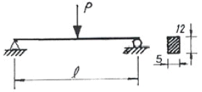
- 83
- 43
- 28
- 65
(정답률: 48%)
15. 안지름이 150mm이고, 관 벽의 두께가 10mm인 알루미늄 파이프가 관 내의 유체로부터 2MPa의 압력을 받고 있다. 파이프 내에서의 최대 인장응력은 몇 MPa인가?
- 15
- 7.5
- 25
- 30
(정답률: 46%)
16. 양단 한지로 된 목재의 장주가 200mm x 200mm의 정사각형 단면을 가질 때 좌굴 하중은 약 몇 kN인가? (단, 길이 ℓ=5m, 탄성계수 E=10GPa, 오일러 공식을 적용한다.)
- 330
- 430
- 530
- 630
(정답률: 65%)
17. 다음과 같은 부재의 온도를 △T만큼 증가시켰을 때, 부재 내에 발생하는 응력은? (단, 단면적 A, 탄성계수는 E, 열팽창계수는 α이다.)
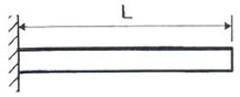
- 0
- α△T
- Eα△T
- △TL/AE
(정답률: 23%)
18. 동일 재료의 원형 중실축의 지름이 3배로 되면 비틀림 강도(Torsional stiffness)는 몇 배로 커지는가?
- 9
- 18
- 27
- 81
(정답률: 21%)
19. 그림과 같은 돌출보에 집중하중이 A점에 5kN과 C점에 6kN이 작용하고 있을 때, B점의 반력은 몇 kN인가?
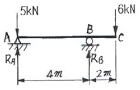
- 9
- 7.5
- 6
- 5
(정답률: 44%)
20. 다음 그림에서 단순보의 최대 처짐량(δ1)과 양단고정보의 최대 처짐량(δ2)의 비(δ2/δ1)은 얼마인가? (단, 보의 굽힘 강성 EI는 일정하고, 자중은 무시한다.)
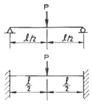
- 1/4
- 1/2
- 3/4
- 1
(정답률: 49%)
2과목: 기계열역학
21. 어느 열기관이 33kW의 일을 발생할 때 1시간 동안의 일을 열량으로 환산하면 약 얼마인가?
- 83600 kJ
- 104500 kJ
- 118800 kJ
- 98878 kJ
(정답률: 63%)
22. 정상과정으로 100kPa, 22℃의 공기를 1MPa로 압축하는 압축기가 있다. 압축공기 질량 1kg에 대해 냉각수는 16kJ의 열을 제거하고 180kJ의 일이 요구될 때, 압축기 출구 온도는 약 몇 ℃인가? (단, 공기의 비열은 1.04kJ/kg·K이다.)
- 210
- 195
- 180
- 170
(정답률: 38%)
23. 이상 재열사이클과 단순 랭킨사이클을 비교한 설명으로 틀린 것은?
- 이상 재열사이클의 열효율이 더 높다.
- 이상 재열사이클의 경우 터빈 출구 건도가 증가한다.
- 이상 재열사이클의 기기 비용이 더 많이 요구된다.
- 이상 재열사이클의 경우 터빈 입구 온도를 더 높일 수 있다.
(정답률: 43%)
24. 다음 관계식 중 옳은 것은? (단, 여기서 u는 내부에너지, h는 엔탈피, P는 압력, v는 비체적, T는 온도이다.)
- h = u + Pv
- h = u – Tv
- h = u – Pv
- h = u + Tv
(정답률: 57%)
25. 어떤 유체의 밀도가 741kg/m3이다. 이 유체의 비체적인 몇 m3/kg인가?
- 0.78 ×10-3
- 1.35 ×10-3
- 2.35 ×10-3
- 2.98 ×10-3
(정답률: 57%)
26. 이상기체의 압력(P), 체적(V)의 관계식 “PVn = 일정”에서 가역단열과정을 표시하는 n의 값은? (단, Cp는 정압비열, Cv는 정적비열이다.)
- 0
- 1
- 정압비열과 정적비열의 비(Cp/Cv)
- 무한대
(정답률: 57%)
27. 밀폐용기에 비내부에너지가 200kJ/kg인 기체 0.5kg이 있다. 이 기체를 용량이 500W인 전기가열기로 2분 동안 가열한다면 최종상태에서 기체의 내부에너지는? (단, 열량은 기체로만 전달된다고 한다.)
- 20 kJ
- 100 kJ
- 120 kJ
- 160 kJ
(정답률: 48%)
28. 온도가 보기와 같은 4개의 열원(Heat Source)에서 100kJ의 열을 방출하였을 때 이 열원의 엔트로피가 가장 적게 감소하는 것은?
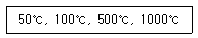
- 50℃
- 100℃
- 500℃
- 1000℃
(정답률: 58%)
29. 다음 기체 중 기체상수가 가장 큰 것은?
- 수소
- 산소
- 공기
- 질소
(정답률: 52%)
30. R-12를 작동 유체로 사용하는 이상적인 증기압축 냉동 사이클이 있다. 이 사이클은 증발기에서 104.08 kJ/kg의 열을 흡수하고, 응축기에서 136.85 kJ/kg의 열을 방출한다고 한다. 이 사이클의 냉동 성능계수는?
- 0.31
- 1.31
- 3.18
- 4.17
(정답률: 50%)
31. 다음 그림은 증기 압축 냉동 사이클의 온도-엔트로피 선도이다. 이 그림에서 냉동기의 응축기에 해당하는 과정은?
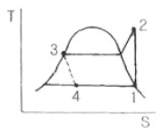
- 과정 1 – 2
- 과정 2 – 3
- 과정 3 – 4
- 과정 4 – 1
(정답률: 44%)
32. 다음 그림과 같은 랭킨 사이클에서 각 점의 엔탈피(kJ/kg)가 각각 i1= 800, i2= 350, i3= 50, i4 = 200 이다. 이 사이클의 효율은 얼마인가?
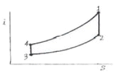
- 20%
- 30%
- 40%
- 50%
(정답률: 46%)
33. 카르노 사이클로 작동되는 열기관이 고온체에서 100 kJ의 열을 받아들인다. 이 기관의 열효율이 30%라면 방출되는 열량(kJ)은?
- 30
- 50
- 60
- 70
(정답률: 37%)
34. 환산 온도(Tγ)와 환산 압력(Pγ)을 이용하여 나타낸 다음과 같은 상태방정식이 있다.
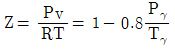
어떤 물질의 기체상수가 0.189 kJ/kgK, 임계온도가 3⑤K, 임계압력이 7380 kPa이다. 이 물질의 비체적을 위의 방정식을 이용하여 20℃ 1000 kPa 상태에서 구하면?- 0.0111 m3/kg
- 0.0303 m3/kg
- 0.0492 m3/kg
- 0.⑤54 m3/kg
(정답률: 28%)
35. 다음 중 순수물질이 아닌 것은?
- 포화상태의 물
- 물과 수증기의 혼합물
- 얼음과 물의 혼합물
- 액체 공기와 기체 공기의 혼합물
(정답률: 50%)
36. 두께가 10cm이고, 내·외측 표면온도가 20℃, -5℃ 인 벽이 있다. 정상상태일 때 벽의 중심온도는 몇 ℃인가?
- 4.5
- 5.5
- 7.5
- 12.5
(정답률: 40%)
37. 흑체의 온도가 20℃에서 80℃로 되었다면 방사하는 복사에너지는 약 몇 배가 되는가?
- 4
- 5
- 1.2
- 2.1
(정답률: 24%)
38. 밀폐 시스템의 압력이 P = (5 – 15V)의 관계에 따라 변한다. 체적(V)이 0.1m3에서 0.3m3로 변하는 동안 이 시스템이 하는 일은? (단, P와 V의 단위는 각각 kPa와 m3이다.)
- 200 J
- 400 J
- 800 J
- 1004 J
(정답률: 45%)
39. 다음 그림과 같이 다수의 추를 올려놓은 피스톤이 끼워져 있는 실린더에 들어 있는 가스를 계로 생각한다. 초기 압력이 300 kPa이고, 초기 체적은 0.⑤m3이다. 열을 가하여 압력을 일정하게 유지시키고 가스의 체적을 0.2mm3으로 증가시킬 때 계가 한 일은?
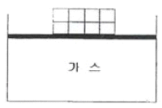
- 30 kJ
- 35 kJ
- 40 kJ
- 45 kJ
(정답률: 50%)
40. 시스템의 열역학적 상태를 기술하는 데 열역학적 상태량(또는 성질)이 사용된다. 다음 중 열역학적 상태량으로 올바르게 짝지어진 것은?
- 열, 일
- 엔탈피, 엔트로피
- 열, 엔탈피
- 일, 엔트로피
(정답률: 40%)
3과목: 기계유체역학
41. 탱크속의 액면이 점선의 위치에서 현 액면위치 D까지 서서히 내려왔다. 액면의 속도를 무시할 때 파이프 말단 C에서의 유출 속도 Vc는 약 몇 m/s인가? (단, 관에서의 마찰은 무시한다.)
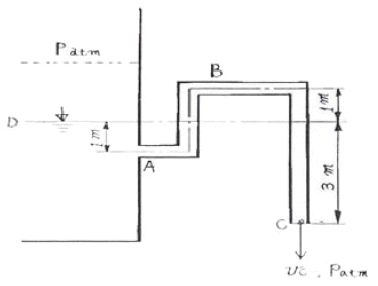
- 3.1
- 6.2
- 7.7
- 9.9
(정답률: 42%)
42. 내경 0.25m, 길이 100m인 매끄러운 수평 강관으로 비중 0.8, 점성계수 0.1Pa·s인 기름을 수송한다. 유량이 100 L/s일 때의 관 마찰손실 수두는 유량이 50 L/s일 때의 몇 배 정도가 되는가? (단, 층류의 관 마찰계수는 64/Re 이고, 난류일 때의 관 마찰계수는 0.3164Re-1/k이고 임계 레이놀즈 수는 2300 이다.)
- 4.1
- 5.⑤
- 0.92
- 2.0
(정답률: 34%)
43. 그림과 같이 비중이 0.83인 기름이 12m/s의 속도로 수직 고정평판에 직각으로 부딪치고 있다. 판에 작용되는 힘 F는 약 몇 N인가?
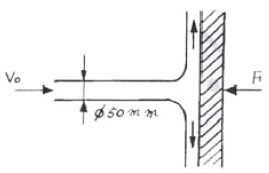
- 23.5
- 28.9
- 288.6
- 234.7
(정답률: 60%)
44. 비중 8.16의 금속을 비중 13.6의 수은에 담근다면 수은 속에 잠기는 금속의 체적은 전체 체적의 약 몇 %인가?
- 40%
- 50%
- 60%
- 70%
(정답률: 52%)
45. 수평으로 놓인 지름 10cm, 길이 200m인 파이프에 완전히 열린 글로브 밸브가 설치되어 있고, 흐르는 물의 평균속도는 2m/s이다. 파이프의 관 마찰계수가 0.02이고, 전체수두 손실이 10m이면, 글로브 밸브의 손실계수는?
- 0.4
- 1.8
- 5.8
- 9.0
(정답률: 57%)
46. 그림과 같은 용기에 수심 2m로 물이 채워져 있다. 이 용기가 연직 상방향으로 9.8m/s2로 가속할 때, B점과 A점의 압력차 PB-PA는 약 몇 kPa인가?
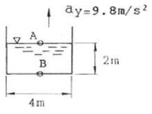
- 39.2
- 19.6
- 9.8
- 78.4
(정답률: 24%)
47. 펌프로 물을 양수시 흡입 측에서의 압력이 진공 압력계로 75 mmHg이다. 이 압력은 절대압력으로 약 몇 kPa인가? (단, 수은의 비중은 13.6이고, 대기압은 760 mmHg이다.)
- 91.3
- 10.0
- 100.0
- 9.1
(정답률: 48%)
48. 0℃ 수은의 비중은 13.596이다. 수은주 152cm에 해당하는 압력은 약 몇 MPa인가?
- 0.101
- 0.202
- 0.304
- 0.4⑤
(정답률: 11%)
49. 지름이 5cm인 원형관에 비중이 0.7인 오일이 3m/s의 속도로 흐를 때, 체적유량과 질량유량은 각각 얼마인가? (단, 물의 밀도는 1000kg/m3이다.)
- 0.59 m3/s, 41.3 kg/s
- 0.⑤9 m3/s, 41.3 kg/s
- 0.0⑤9 m3/s, 4.13 kg/s
- 0.59 m3/s, 4.13 kg/s
(정답률: 6%)
50. 반지름이 R인 비누방울의 내부 압력은 외부 압력보다 얼마나 더 큰가? (단, 표면장력을 σ라 한다.)
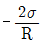
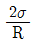
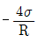
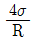
(정답률: 44%)
51. 비점성, 비압축성 유체의 균일한 유동장에 유동 방향과 직각으로 정지된 원형 실린더가 놓여있다고 할 때, 실린더에 작용하는 힘에 관하여 설명한 것으로 옳은 것은?
- 항력과 양력이 모두 영(0)이다.
- 항력은 영(0)이고 양력은 영(0)이 아니다.
- 양력은 영(0)이고 항력은 영(0)이 아니다.
- 항력과 양력 모두 영(0)이 아니다.
(정답률: 44%)
52. 비중량이 자유표면(free surface)으로부터 깊이 h의 1차 함수 γ=A+Bh 가 되는 정지유체 내에서 깊이 h인 곳의 계기 압력은?
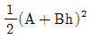
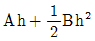
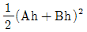
- Ah+Bh2
(정답률: 32%)
53. 공기를 이상기체라 가정할 때 2기압 20℃에서의 공기의 밀도는 약 몇 kg/m3 인가? (단, 1기압은 105 Pa이고, 공기의 기체상수 R = 287 N·m/kg·K이다.)
- 1.2
- 2.38
- 1.0
- 999
(정답률: 55%)
54. 수평 원판 내의 층류 유동에서 유량이 일정할 때 압력 강하는?
- 관의 지름에 비례한다.
- 관의 지름에 반비례한다.
- 관의 지름의 제곱에 반비례한다.
- 관의 지름의 4제곱에 반비례한다.
(정답률: 33%)
55. 일정한 지름을 가지고 수평으로 놓인 파이프에 완전 발달한 정상 상태의 비압축성, 층류 유동이 흐르고 있다. 다음 중 일정한 값을 가지지 못하고 위치에 따라 계속 변하는 것은?
- 중심축에서 속도
- 중심축에서 가속도
- 파이프 벽면에서 전단응력
- 파이프 벽면에서 압력
(정답률: 36%)
56. 역학적 상사성(相似性)이 성립하기 위해 프루드(Froude) 수를 같게 해야 되는 흐름은?
- 자유표면을 가지는 유체의 흐름
- 점성 계수가 큰 유체의 흐름
- 표면 장력이 문제가 되는 흐름
- 압축성을 고려해야 되는 유체의 흐름
(정답률: 66%)
57. 어떤 잠수함이 1.5 km/hr의 속도로 잠항하는 상태를 관찰하기 위하여 실물의 1/10 길이의 모형을 만들어 같은 바닷물을 넣은 탱크 안에서 실험하려고 한다. 모형의 속도는 몇 km/hr 인가?
- 0.15
- 1.5
- 15
- 150
(정답률: 34%)
58. 익폭 10m, 익현의 길이 1.8m인 날개로 된 비행기가 112m/s의 속도로 날고 있다. 익현의 받음각이 1°, 양력계수 0.326, 항력계수 0.0761 일 때 비행에 필요한 동력은 약 몇 kW 인가? (단, 공기의 밀도는 1.2173 kg/m3 이다.)
- 1172
- 1343
- 1570
- 6730
(정답률: 27%)
59. 길이가 10m이고, 단면이 직경 15cm인 원기둥이 2m/s의 바람에 의하여 힘을 받고 있다. 바람에 의하여 기둥의 밑둥에 작용되는 최대 굽힘 모멘트는 몇 N·m 인가? (단, 정면도 면적 기준의 항력계수는 1.2이고, 공기의 밀도 ρ=1.2kg/m3이다.)
- 4.32
- 21.6
- 43.2
- 216
(정답률: 15%)
60. 2차원 유동장에서 속도벡터가
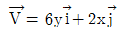
일 때 점(3, 5)을 지나는 유선의 기울기는? (단,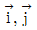
는 x, y 방향의 단위벡터이다.)- 1/3
- 1/5
- 1/9
- 1/12
(정답률: 52%)
4과목: 기계재료 및 유압기기
61. 탄소강에 함유되어 있는 원소 중 적열 취성의 원인이 되는 것은?
- 인
- 규소
- 구리
- 황
(정답률: 79%)
62. 충격에는 약하나 압축강도는 크므로 공작기계의 베드, 프레임, 기계 구조물의 몸체 등에 가장 적합한 재질은?
- 합금공구강
- 탄소강
- 고속도강
- 주철
(정답률: 63%)
63. 심냉(sub-zero) 처리의 목적을 바르게 설명한 것은?
- 자경강에 인성을 부여하기 위함
- 담금질 후 시효변형을 방지하기 위해 잔류 오스테나이트를 마텐자이트 조직으로 얻기 위한
- 항온 담금질하여 베이나이트 조직을 얻기 위함
- 급열·급냉시 온도 이력 현상을 관찰하기 위함
(정답률: 81%)
64. 미하나이트 주철(Meehanite cast iron)의 바탕조적은?
- 오스테나이트
- 펄라이트
- 시멘타이트
- 페라이트
(정답률: 46%)
65. 일반적인 금속의 공통적 특성을 설명한 것으로 틀린 것은?
- 상온에서 고체이며 결정체이다.(단, 수은 제외)
- 비중이 작고 광택을 갖는다.
- 열과 전기의 양도체이다.
- 소성변형성이 있어 가공하기 쉽다.
(정답률: 57%)
66. 강을 오스템퍼링(Austempering) 처리 하면 얻어지는 조직으로서 열처리 변형이 적고 탄성이 증가하는 조직은?
- 펄라이트
- 마텐자이트
- 베이나이트
- 시멘타이트
(정답률: 68%)
67. 베어링에 사용되는 구리합금의 대표적인 켈밋의 주성분은?
- 구리 – 주석
- 구리 – 납
- 구리 – 알루미늄
- 구리 – 니켈
(정답률: 41%)
68. 강에서 열처리 조직으로 경도가 가장 큰 것은?
- 오스테나이트
- 마텐자이트
- 페라이트
- 펄라이트
(정답률: 76%)
69. 대량 생산하는 부품이나 시계용 기어와 같은 정밀 가공을 요하는 것으로 황동에 Pb 1.5 ~ 3.0%를 첨가한 합금은?
- 쾌삭황동
- 강력황동
- 델타메탈
- 애드미럴티 황동
(정답률: 59%)
70. 델타 메탈 이라고도 하며 강도가 크고 내식성이 좋아 광산 기계, 선박용 기계, 화학 기계 등에 사용되는 것은?
- 규소 황동
- 네이벌 활동
- 애드미럴티 황동
- 철 황동
(정답률: 47%)
71. 다음 KS 유압 장치 표시 기호 중 요동형 유압 액추에이터를 나타내는 기호는?
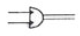
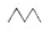
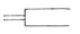
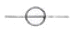
(정답률: 67%)
72. 토출압력 7.84 MPa, 토출유량 3 × 104cm3/min인 유압 펌프의 펌프동력은 약 몇 kW 인가?
- 2.4
- 3.2
- 3.9
- 4.6
(정답률: 64%)
73. 다음 유압기기 중 오일의 점성을 이용한 기계, 유속을 이용한 기계, 팽창 수축을 이용한 기계로 분류할 때 점성을 이용한 기계로 가장 적합한 것은?
- 토크 컨버터(torque converter)
- 쇼크 업소버(shock absorber)
- 압력계(pressure gage)
- 진공 개폐 밸브(vacuum open-closed valve)
(정답률: 68%)
74. 보기와 같은 유압 회로도에서 릴리프 밸브는?
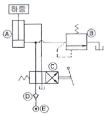
- (A)
- (B)
- (C)
- (D)
(정답률: 73%)
75. 유량제어 밸브를 실린더 출구 측에 설치한 회로로서 실린더에서 유출되는 유량을 제어하여 피스톤 속도를 제어하는 회로는?
- 미터 인 회로
- 카운터 밸런스 회로
- 미터 아웃 회로
- 블리드 오프 회로
(정답률: 78%)
76. 부하의 낙하를 방지하기 위하여 배압(back pressure)을 부여하는 밸브는?
- 카운터 밸런스 밸브(counter balance valve)
- 릴리프 밸브(relief valve)
- 무부하 밸브(unloading valve)
- 시퀀스 밸브(sequence valve)
(정답률: 72%)
77. 유압기기 중 작동유가 가지고 있는 에너지를 잠시 저축했다가 사용ㅎ며, 이것을 이용하여 갑작스런 충격 압력에 대한 완충작용도 할 수 있는 것은?
- 축압기
- 유체 커플링
- 스테이터
- 토크 컨버터
(정답률: 73%)
78. 유압 기기 통로(또는 관로)에서 탱크(또는 매니폴드 등)로 돌아오는 액체 또는 액체가 돌아오는 현상을 나타내는 용어는?
- 누설
- 컷오프(cut off)
- 드레인(drain)
- 인터플로(interflow)
(정답률: 70%)
79. 유압에 대한 다음 설명 중 잘못된 것은?
- 점성계수의 차원은 [ML-1T]이다. (M : 질량, L : 길이, T : 시간)
- 동점성계수의 단위는 [stokes]이다.
- 유압 작동유의 점도는 온도에 따라 변한다.
- 점성계수의 단위는 [poise]이다.
(정답률: 71%)
80. 유압작동유의 구비 조건으로 부적당한 것은?
- 비압축성일 것
- 큰 점도를 가질 것
- 온도에 대해 점도변화가 작을 것
- 열전달율이 높을 것
(정답률: 39%)
5과목: 기계제작법 및 기계동력학
81. 부도체도 가공이 가능하고, 가공액은 물이나 경유를 사용하며 세라믹에 구멍을 가공할 수 있는 방법은?
- 전해 연삭
- 전주 가공
- 래핑 가공
- 초음파 가공
(정답률: 48%)
82. 두께 2mm의 철판에 ø20mm의 구멍을 뚫을 때, 펀칭에 가하는 힘은 최소 몇 kgf 이상이어야 하는가? (단, 철판의 전단저항은 45 kgf/mm2)
- 4213
- 5655
- 1256
- 2786
(정답률: 60%)
83. 내접 기어(internal gear)를 절삭하는 공작기계로 다음 중 가장 적당한 것은?
- 플레이너
- 브로칭 머신
- 글리슨 기어 제네레이터
- 펠로즈 기어 셰이퍼
(정답률: 50%)
84. 주물의 결함으로 주물의 일부분에 불순물이 집중되어 석출되거나 가벼운 부분이 위에 뜨고, 무거운 부분이 밑에 가라앉아 굳어지거나 배합이 달라지는 현상은?
- 편석
- 수축공
- 기공
- 치수불량
(정답률: 64%)
85. 광파 간섭현상을 이용하여 평면도를 측정하는 기기는?
- 옵티컬 플랫(optical flat)
- 공구 현미경
- 오토콜리메이터(autocollimator)
- NF식 표면 거칠기 측정기
(정답률: 44%)
86. 절삭속도 120 m/min, 이송속도 0.25 mm/rev로 지름 80mm의 원형 단면 봉을 선삭한다. 500mm 길이를 1회 선삭하는데 필요한 가공시간(분)은?
- 약 1.5분
- 약 4.2분
- 약 7.3분
- 약 10.1분
(정답률: 49%)
87. 다음 중 연강의 절삭작업에서 칩이 경사면 위를 연속적으로 원활하게 흘러 나가는 모양으로 연속칩이라고도 하며, 매끄러운 가공표면을 얻을 수 있는 칩의 형태는?
- 열단형
- 전단형
- 유동형
- 균열형
(정답률: 54%)
88. 기계 가공한 강제품의 일반적인 열처리 목적이 아닌 것은?
- 표면을 경화시키기 위한 것이다.
- 조직을 안정화시키기 위한 것이다.
- 조직을 조대화하여 편석을 발생시키기 위한 것이다.
- 경도 및 강도를 증가시키기 위한 것이다.
(정답률: 70%)
89. 불활성가스를 보호가스로 사용하여 용가제인 전극 와이어를 연속적으로 송급하여 모재 사이에 아크를 발생시켜서 용접하는 것은?
- 점(SPOT)용접
- 미그(MIG)용접
- 스터드(STUD)용접
- 테르밋(THERMIT)용접
(정답률: 66%)
90. 방전가공시 전극(가공공구) 재질로 사용되지 않는 것은?
- 황동
- 텅스텐
- 구리
- 알루미늄
(정답률: 54%)
91. 다음 그림과 같이 질량이 동일한 두 개의 구슬 A, B가 있다. A의 속도는 v이고 B는 정지하고 있다. 충돌 후 A와 B의 속도에 관한 설명으로 옳은 것은? (단, 두 구슬 사이의 반발계수는 e=1 이다.)
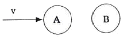
- A와 B 모두 정지한다.
- A는 정지하고 B는 v의 속도를 가진다.
- A와 B 모두 v의 속도를 가진다.
- A와 B 모두 v/2의 속도를 가진다.
(정답률: 58%)
92. 어느 물체가 10mm와 16mm 사이를 상하로 왕복운동 한다. 이 운동이 1분에 60회 반복되는 조회 운동이라고 할 때, 변위 진폭과 가속도 진폭은?
- 6mm, 6.3mm/s2
- 6mm, 12.6mm/s2
- 3mm, 12.6mm/s2
- 3mm, 118.4mm/s2
(정답률: 22%)
93. 물방울이 떨어지기 시작하여 3초 후의 속도는 약 몇 m/s인가? (단, 공기의 저항은 무시하고, 초기속도는 0으로 한다.)
- 3
- 9.8
- 19.6
- 29.4
(정답률: 63%)
94. 반경이 R인 바퀴가 미끄러지지 않고 구른다. 0점의 속도에 대한 A점의 속도의 비는 얼마인가?
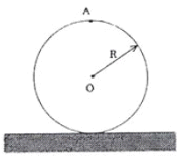
- VA/V0
- VA/V0=√2
- VA/V0=2
- VA/V0=4
(정답률: 55%)
95. m=18kg, k=50N/cm, c=0.6N·s/cm인 1자유도 점성감쇠계가 있다. 이 진동계의 감쇠비는?
- 0.10
- 0.20
- 0.33
- 0.50
(정답률: 58%)
96. 다음 중 변위 전달률(Displacement Transmissibility)이 1이 되는 경우는? (단,
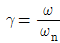
이다.)- γ=1
- γ=√2
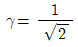
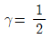
(정답률: 48%)
97. 질량 0.25kg의 물체가 스프링 상수 0.1533N/mm인 스프링에 매달려 있을 때 고유진동수와 정적 처짐을 각각 구한 것은? (단, 스프링의 질량은 무시한다.) (순서대로 유진동수(Hz), 정적처짐(mm))
- 3.94, 6
- 3.94, 16
- 0.99, 6
- 0.99, 16
(정답률: 47%)
98. 중량 2kN, 직경 60cm의 균일한 롤러(roller)의 축을 수평으로 하여 평면 위에 놓고, 그 축에 수평방향으로 힘 500N을 가하여 옆으로 굴릴 때 롤러 중심의 가속도는 약 몇 m/s2인가? (단, 롤러는 수평면 위에서 미끄러짐 없이 구른다고 가정한다.)
- 0.03
- 0.53
- 1.63
- 2.73
(정답률: 39%)
99. 10kg의 상자가 초기속도 15m/s로 30°의 경사면 위로 올라간다. 상자와 경사면의 운동 마찰계수는 0.15이다. 상자가 최대로 올라갔다가 내려와 원 위치를 다시 지날 때까지 마찰에 의해 손실된 에너지는 약 몇 J인가?
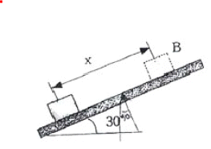
- 336
- 464
- 560
- 629
(정답률: 20%)
100. 그림에서 질량 100kg의 물체 A와 수평면 사이의 마찰계수는 0.3이며 물체 B의 질량은 30kg이다. 힘 Py=15t2이다. t=0sec에서 물체 A가 오른쪽으로 2.0m/s로 운동을 시작한다면 t=5sec일 때 이 물체의 속도는 약 몇 m/s인가?
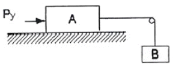
- 6.81
- 6.92
- 7.31
- 7.54
(정답률: 30%)
G = E / (2(1 + v))
여기서 E는 탄성계수, v는 포아송비이다. 따라서,
G = 200 / (2(1 + 0.3)) = 76.9 GPa
따라서 정답은 "76.9"이다.